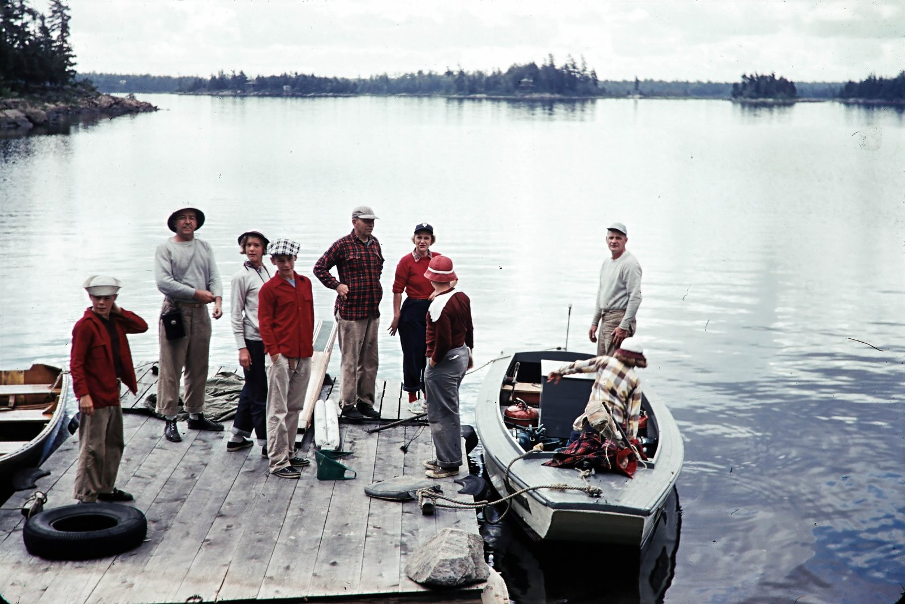

above lovesick rapids, July 51
catch at lovesick July 1951
1951 Lovesick Teddy cleaning fish
Getting canoes ready to portage to boundry from Deep Bay August 1951
Teddy taking canoe into Boundry August 1951
taking off for overnight at Boundry- stayed at wolf, August 1951
overnight trip to Boundry wolf and island, lake ho... August 1951
Billys catch at wolf Halde, BigMouth August 1951
August 1951, Deep bay getting ready to go to Mountain Chutes
August 1951, end of portage from Deep Bay
Magnetawan ready to go down river to Mountain Chutes August 1951
August 1951 Mountain Chutes
Cooling tired feet Mountain Chutes August 1951
Peggy diney lower chutes at Mountain Chutes August 1951
Ave 1951 Lower chutes at Mountain Chutes
August 1951 gull getting fish at Mountain Chutes
Mountain Chutes August 1951
Peggy Diney, catch at Mountain Chutes August 1951
August 1951 Mary's Birthday
Rifle Shoot August 1951
Arrival at Bennetts 1951
August 1951 Allway of Greenie
Putting up new Brownie 1952
__ Bill trying and Brownie 1952
Pea Pad 1952
Johna goat 1952
Snack Break 1952
Barry and Ted with porcupine 1952
Evening at Home 1952
Food for trip to Ba__dry and Walf 1952
1952
Deep Bay 1952
Al, Peg and going for a swim, 1952